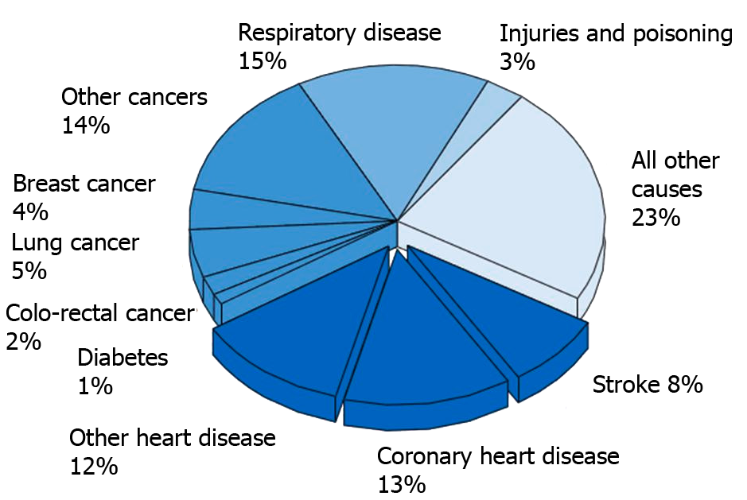

Applications
In recent years, heart disease has become one of the most apparent causes of death in mortality statistics in an international level. To this extent, 23.6% of deaths in the world can be attributed to heart disease. In the United Kingdom, as exemplified by Figure 1, 33% (almost one third) of deaths are associated with heart disease.
{kind=link}
Moreover, 111,000 people are estimated to have a heart attack each year in the UK. Another noteworthy fact is that although the UK mortality rates due to heart attacks have fallen by around 25%, with people over 45 years of age being the most likely sufferers, they are still higher than in many other EU countries .
Heart disease also puts a substantial financial burden on both the tax payer and the NHS. The financial burden to the British Economy does not manifest itself solely in the cost of healthcare to the patient, but also in productivity losses from the illness and death of those at working age, as well as informal care for them by loved ones, also of working age. The approximate cost of heart disease to the UK economy is around £30.7 billion. Around 47% of this is direct cost of healthcare (69 million NHS work days were lost), 27% due to productivity losses and 26% due to informal care of those affected. Moreover, the UK Government budget for 2011 dictates £126 billion for healthcare and as a result the direct healthcare costs of heart disease account for over 10% of total government spending on healthcare.
The CX50 works both to predict and alert doctors of possible heart issues that may arise in a patient which greatly increases the patient’s chance of survival and allows the patient to spend less time at the hospital. Consequently, healthcare costs would be reduced which would be beneficial for the NHS and the state.
If you want to calculate your risk of a heart disease you can visit QRISK, a website which allows you to calculate your heart risk. Alternatively you can download the iPhone app.
Further Information:
BHF - Economic Costs of Heart Disease in the UK
Offered services
Doctors will advise patients to use this service if they are expected to have a heart disease or have been diagnosed with a heart attack.
The patient will be given a CX50 ECG patch and given a demonstration on how to charge the batteries once a week; this process is very simple and can easily be done during a TV advert. It monitors not only the heart but also the temperature of and how active the patient is which allows Doctors to make better diagnoses and monitor the heart within its context.
The CX50 then transmits the data collected to a Coracare server via a mobile network which can be accessed by the patient, their Doctor and any other Doctors they have given permission.
Patient process
Once a doctor has suggested their patient use the Coracare service they will be given the CX50 ECG patch and logon details for the website. Coracare then continuously measures the heart rate and context of the user. Initially this data is sent to the user’s smartphone and after some automated analysis is sent to the Coracare servers where further analysis is done. The analysed data is available for the user to view online through the website. Only data of interest is sent directly to the doctor but they can also check the overall health of the heart online. This shall continue for however long the doctor deems fit.
Data transmission and Privacy Policy
- Throughout the data transmission process, all necessary steps are taken to ensure that CX50 transmits securely the data collected to a Coracare server via a mobile network which can be accessed only by the patient, their Doctor and any physicians that have been given permission for further data analysis.
- Patient can access the data held on them by Coracare by logging in their personalised online account. Coracare will only pass information about the patient to third parties (e.g. specialized doctors for further diagnostic purposes) with patient’s consent.